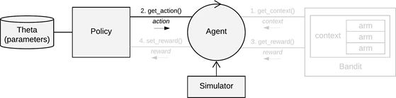
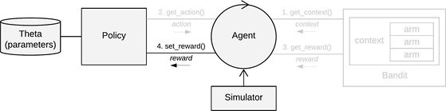

Parent or superclass of all {contextual} Policy subclasses.
On every t = 1, …, T, a policy receives d dimensional feature vector or
d x k dimensional matrix
context$X*, the current number of Bandit arms in context$k, and the current
number of contextual features in context$d.
To make sure a policy supports both contextual feature vectors and matrices in context$X, it is
suggested any contextual policy makes use of contextual's get_arm_context(context, arm)
utility function to obtain the current context for a particular arm, and get_full_context(context)
where a policy makes direct use of a d x k context matrix.
It has to compute which of the k
Bandit arms to pull by taking into account this contextual information plus the policy's
current parameter values stored in the named list theta. On selecting an arm, the policy then
returns its index as action$choice.

On pulling a Bandit arm the policy receives a Bandit reward through
reward$reward. In combination with the current context$X* and action$choice,
this reward can then be used to update to the policy's parameters as stored in list theta.

* Note: in context-free scenario's, context$X can be omitted.
policy <- Policy$new()
new()Generates and initializes a new Policy object.
get_action(t, context)arguments:
t: integer, time step t.
context: list, containing the current context$X (d x k context matrix),
context$k (number of arms) and context$d (number of context features)
theta
and the current context. Returns a named list containing
action$choice, which holds the index of the arm to play.set_reward(t, context, action, reward)arguments:
t: integer, time step t.
context: list, containing the current context$X (d x k context matrix),
context$k (number of arms) and context$d (number of context features)
(as set by bandit).
action: list, containing action$choice (as set by policy).
reward: list, containing reward$reward and, if available,
reward$optimal (as set by bandit).
theta.set_parameters()Helper function, called during a Policy's initialisation, assigns the values
it finds in list self$theta_to_arms to each of the Policy's k arms.
The parameters defined here can then be accessed by arm index in the following way:
theta[[index_of_arm]]$parameter_name.
Core contextual classes: Bandit, Policy, Simulator,
Agent, History, Plot
Bandit subclass examples: BasicBernoulliBandit, ContextualLogitBandit,
OfflineReplayEvaluatorBandit
Policy subclass examples: EpsilonGreedyPolicy, ContextualLinTSPolicy